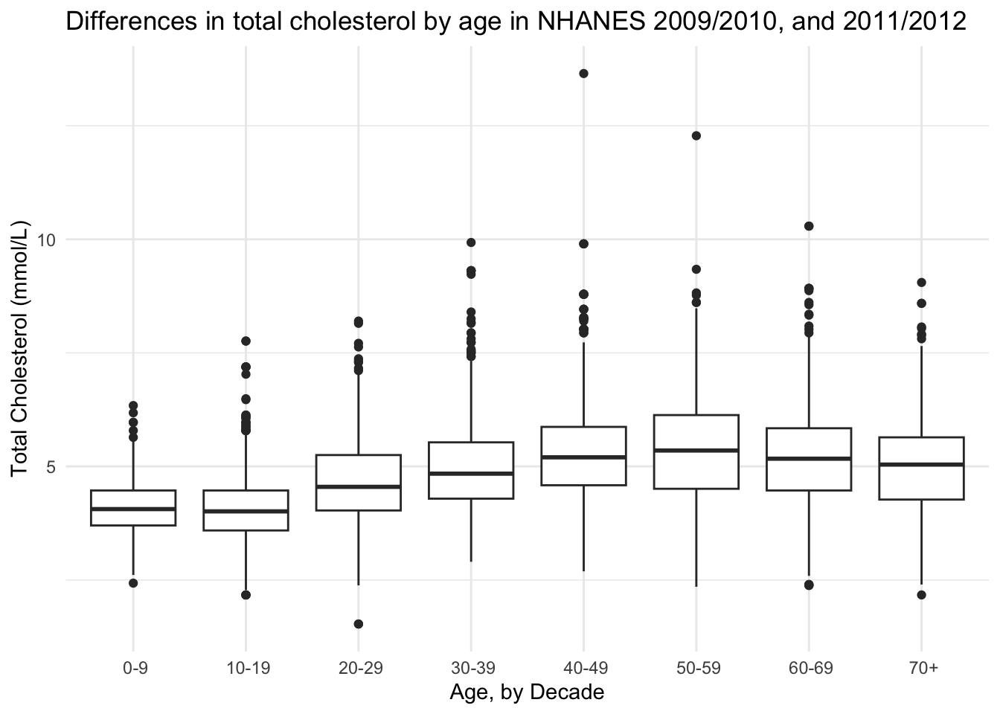
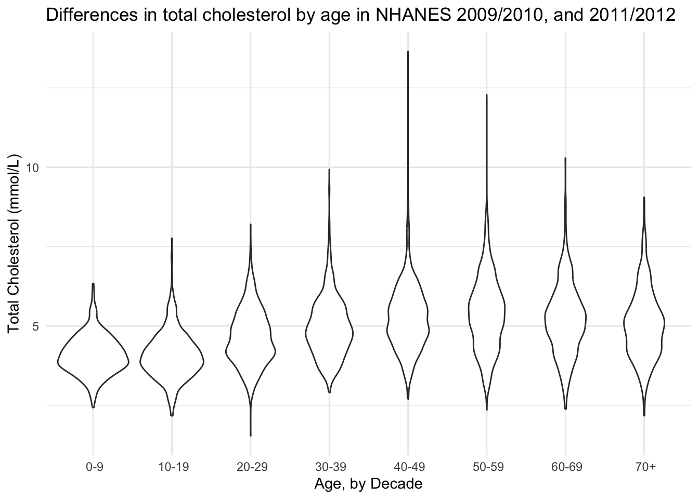
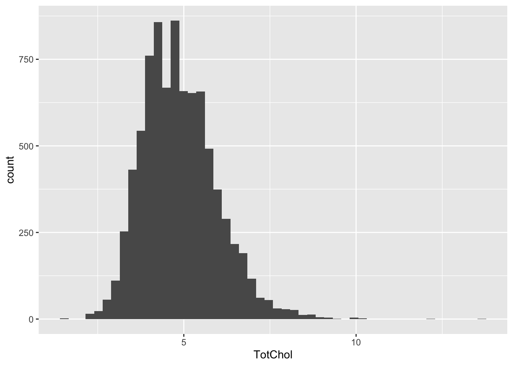
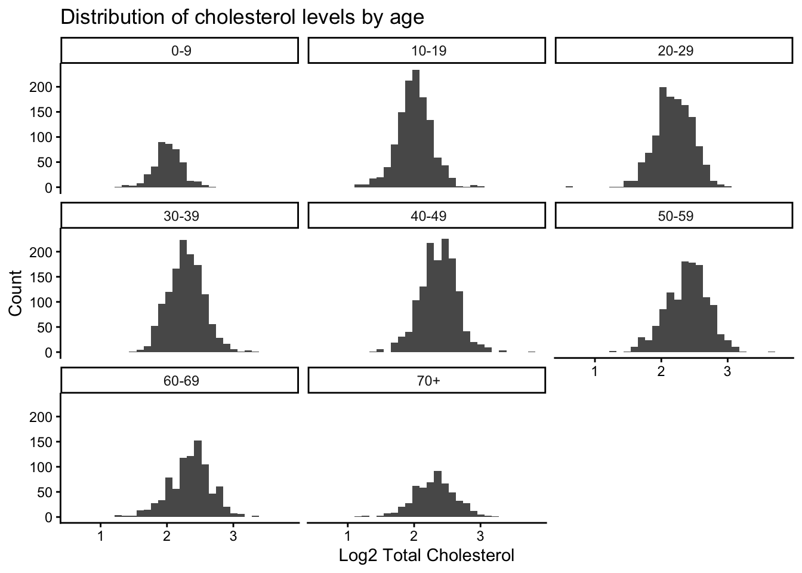
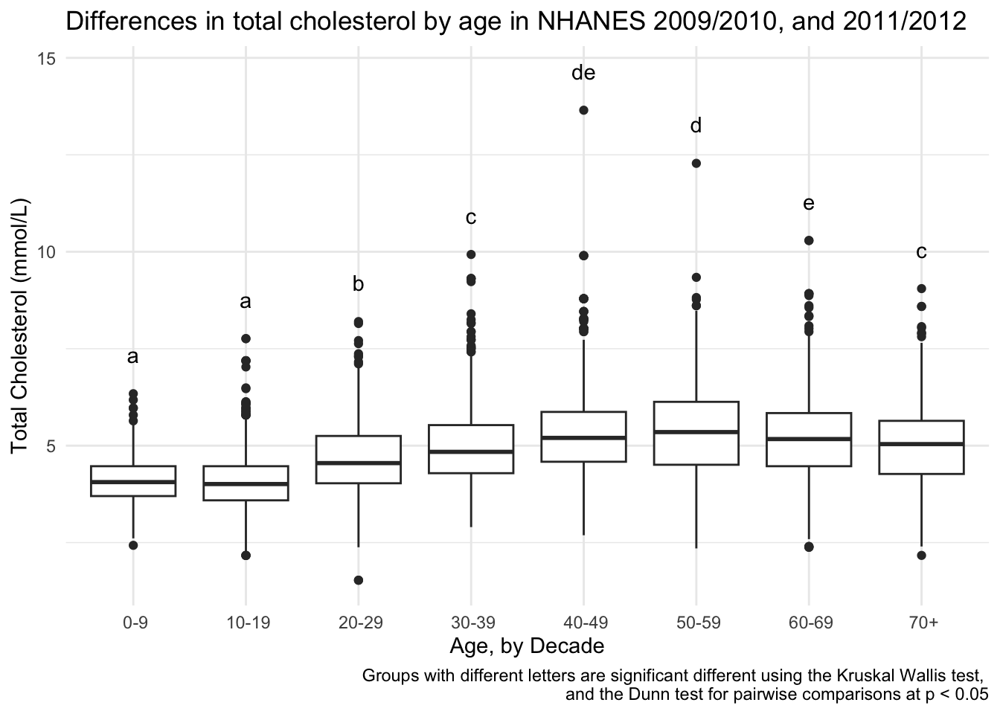
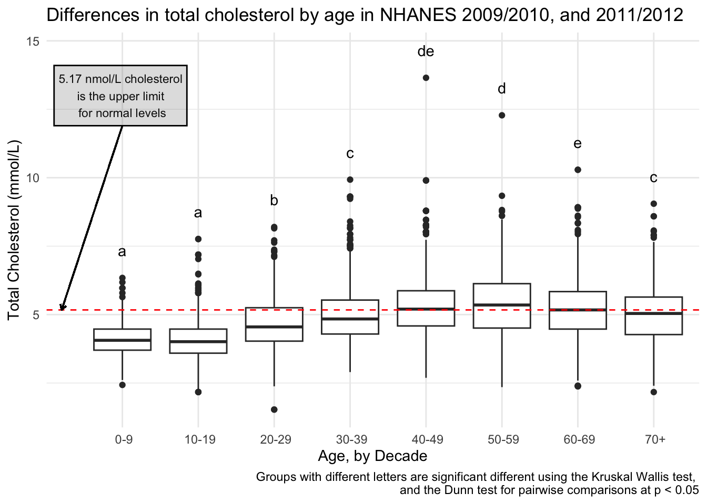

library(tidyverse) # for everything
library(NHANES) # for data
library(rstatix) # for pipe friendly statistics functions
library(ggpubr) # for easy annotating of stats
library(glue) # for easy pasting
library(rcompanion) # for creating the comparison table Adding Statistics Recitation Solutions
Week 9
Introduction
Today you will be practicing what we learned in today’s class on adding statistics to your plots.
Load data
We will be using the NHANES data again from the package NHANES.
Is total cholesterol (TotChol) different by age (AgeDecade)?
Need a hint? (Click to expand)
Hint - you want to test your assumptions to see what tests to do. You might need to use different posthoc comparison methods than we did in class.
Need another hint? (Click to expand)
Another hint - the function rcompanion::cldList() will convert the resulting comparison table from a posthoc Dunn test to create a column with the letters indicating which groups are significantly different from each other.
Base plot
Plot to get an overview.
(totchol_age_baseplot <- NHANES |>
drop_na(AgeDecade, TotChol) |>
ggplot(aes(x = AgeDecade, y = TotChol, group = AgeDecade)) +
geom_boxplot() +
theme_minimal() +
theme(legend.position = "none") +
labs(x = "Age, by Decade",
y = "Total Cholesterol (mmol/L)",
title = "Differences in total cholesterol by age in NHANES 2009/2010, and 2011/2012"))
Would a violin plot be better?
NHANES |>
drop_na(AgeDecade, TotChol) |>
ggplot(aes(x = AgeDecade, y = TotChol, group = AgeDecade)) +
geom_violin() +
theme_minimal() +
theme(legend.position = "none") +
labs(x = "Age, by Decade",
y = "Total Cholesterol (mmol/L)",
title = "Differences in total cholesterol by age in NHANES 2009/2010, and 2011/2012")
Eh I think I like the boxplot better.
Use stat_compare_means()
NHANES |>
drop_na(AgeDecade, TotChol) |>
ggplot(aes(x = AgeDecade, y = TotChol, group = AgeDecade)) +
geom_boxplot() +
stat_compare_means() +
theme_minimal() +
theme(legend.position = "none") +
labs(x = "Age, by Decade",
y = "Total Cholesterol (mmol/L)",
title = "Differences in total cholesterol by age from NHANES 2009/2010, and 2011/2012")
Testing assumptions
Normality
# testing normality by group
NHANES |>
drop_na(AgeDecade, TotChol) |> # remove NAs
group_by(AgeDecade) |>
shapiro_test(TotChol) # test for normality# A tibble: 8 × 4
AgeDecade variable statistic p
<fct> <chr> <dbl> <dbl>
1 " 0-9" TotChol 0.986 5.23e- 4
2 " 10-19" TotChol 0.971 5.15e-15
3 " 20-29" TotChol 0.988 1.85e- 8
4 " 30-39" TotChol 0.963 1.58e-17
5 " 40-49" TotChol 0.960 7.88e-19
6 " 50-59" TotChol 0.987 6.76e- 9
7 " 60-69" TotChol 0.986 2.11e- 7
8 " 70+" TotChol 0.983 6.20e- 6Not normal.
NHANES |>
ggplot(aes(x = TotChol)) +
geom_histogram(bins = 50)Warning: Removed 1526 rows containing non-finite outside the scale range
(`stat_bin()`).
Constant variance
NHANES |>
drop_na(AgeDecade, TotChol) |> # remove NAs
levene_test(TotChol ~ AgeDecade) # test for constant variance# A tibble: 1 × 4
df1 df2 statistic p
<int> <int> <dbl> <dbl>
1 7 8158 48.6 4.39e-68Non constant variance. Non-parametric it is.
Log transformed tests
What if I log transform my data? Does it look more normal then?
NHANES_log <- NHANES |>
mutate(TotChol_log2 = log2(TotChol))Normality
# testing normality by group
NHANES_log |>
drop_na(AgeDecade, TotChol_log2) |> # remove NAs
group_by(AgeDecade) |>
shapiro_test(TotChol_log2) # test for normality# A tibble: 8 × 4
AgeDecade variable statistic p
<fct> <chr> <dbl> <dbl>
1 " 0-9" TotChol_log2 0.995 0.219
2 " 10-19" TotChol_log2 0.991 0.00000180
3 " 20-29" TotChol_log2 0.989 0.0000000306
4 " 30-39" TotChol_log2 0.995 0.000536
5 " 40-49" TotChol_log2 0.993 0.00000977
6 " 50-59" TotChol_log2 0.993 0.0000100
7 " 60-69" TotChol_log2 0.989 0.00000472
8 " 70+" TotChol_log2 0.995 0.0751 Still pretty not normal via Shapiro Test. Let’s look at the log2 transformed total choletserol distributions across the different age groups.
NHANES_log |>
drop_na(TotChol_log2, AgeDecade) |>
ggplot(aes(x = TotChol_log2)) +
geom_histogram() +
facet_wrap(vars(AgeDecade)) +
theme_classic() +
labs(x = "Log2 Total Cholesterol",
y = "Count",
title = "Distribution of cholesterol levels by age")`stat_bin()` using `bins = 30`. Pick better value `binwidth`.
Some age groups look more normal than others.
Constant variance
NHANES_log |>
drop_na(AgeDecade, TotChol_log2) |> # remove NAs
levene_test(TotChol_log2 ~ AgeDecade) # test for constant variance# A tibble: 1 × 4
df1 df2 statistic p
<int> <int> <dbl> <dbl>
1 7 8158 16.8 4.03e-22Still no constant variance.
Kruskal Wallis test
kruskal_chol <- NHANES |>
drop_na(AgeDecade, TotChol) |> # remove NAs
kruskal_test(TotChol ~ AgeDecade)Ok significant difference exists. Where is it?
Post-hoc analysis
Run Dunn test, which is the posthoc test that goes along the Kruskal-Wallis. In an analogy example, ANOVA is to Tukey as Kruskall-Wallis is to Dunn. I am using the Benjamini Hochberg multiple testing correction, the default in this method is p.adjust.method = "holm" which also would be ok to use in this case.
kruskal_chol_posthoc <- NHANES |>
drop_na(AgeDecade, TotChol) |> # remove NAs
dunn_test(TotChol ~ AgeDecade,
p.adjust.method = "BH") # Benjamini Hochberg multiple testing correction
knitr::kable(kruskal_chol_posthoc)| .y. | group1 | group2 | n1 | n2 | statistic | p | p.adj | p.adj.signif |
|---|---|---|---|---|---|---|---|---|
| TotChol | 0-9 | 10-19 | 415 | 1214 | 0.0499933 | 0.9601277 | 0.9601277 | ns |
| TotChol | 0-9 | 20-29 | 415 | 1257 | 10.5808362 | 0.0000000 | 0.0000000 | **** |
| TotChol | 0-9 | 30-39 | 415 | 1273 | 15.8700258 | 0.0000000 | 0.0000000 | **** |
| TotChol | 0-9 | 40-49 | 415 | 1354 | 21.2610617 | 0.0000000 | 0.0000000 | **** |
| TotChol | 0-9 | 50-59 | 415 | 1234 | 22.1590557 | 0.0000000 | 0.0000000 | **** |
| TotChol | 0-9 | 60-69 | 415 | 873 | 18.7771929 | 0.0000000 | 0.0000000 | **** |
| TotChol | 0-9 | 70+ | 415 | 546 | 14.8778795 | 0.0000000 | 0.0000000 | **** |
| TotChol | 10-19 | 20-29 | 1214 | 1257 | 14.8156650 | 0.0000000 | 0.0000000 | **** |
| TotChol | 10-19 | 30-39 | 1214 | 1273 | 22.2911677 | 0.0000000 | 0.0000000 | **** |
| TotChol | 10-19 | 40-49 | 1214 | 1354 | 30.1092884 | 0.0000000 | 0.0000000 | **** |
| TotChol | 10-19 | 50-59 | 1214 | 1234 | 31.0354615 | 0.0000000 | 0.0000000 | **** |
| TotChol | 10-19 | 60-69 | 1214 | 873 | 25.1656727 | 0.0000000 | 0.0000000 | **** |
| TotChol | 10-19 | 70+ | 1214 | 546 | 18.7480286 | 0.0000000 | 0.0000000 | **** |
| TotChol | 20-29 | 30-39 | 1257 | 1273 | 7.4954589 | 0.0000000 | 0.0000000 | **** |
| TotChol | 20-29 | 40-49 | 1257 | 1354 | 15.1631720 | 0.0000000 | 0.0000000 | **** |
| TotChol | 20-29 | 50-59 | 1257 | 1234 | 16.4294388 | 0.0000000 | 0.0000000 | **** |
| TotChol | 20-29 | 60-69 | 1257 | 873 | 11.8155734 | 0.0000000 | 0.0000000 | **** |
| TotChol | 20-29 | 70+ | 1257 | 546 | 7.2165159 | 0.0000000 | 0.0000000 | **** |
| TotChol | 30-39 | 40-49 | 1273 | 1354 | 7.5785143 | 0.0000000 | 0.0000000 | **** |
| TotChol | 30-39 | 50-59 | 1273 | 1234 | 9.0202694 | 0.0000000 | 0.0000000 | **** |
| TotChol | 30-39 | 60-69 | 1273 | 873 | 5.0637294 | 0.0000004 | 0.0000005 | **** |
| TotChol | 30-39 | 70+ | 1273 | 546 | 1.4042843 | 0.1602342 | 0.1661688 | ns |
| TotChol | 40-49 | 50-59 | 1354 | 1234 | 1.6385488 | 0.1013073 | 0.1091001 | ns |
| TotChol | 40-49 | 60-69 | 1354 | 873 | -1.6897791 | 0.0910702 | 0.1019987 | ns |
| TotChol | 40-49 | 70+ | 1354 | 546 | -4.4189908 | 0.0000099 | 0.0000126 | **** |
| TotChol | 50-59 | 60-69 | 1234 | 873 | -3.1166301 | 0.0018293 | 0.0022270 | ** |
| TotChol | 50-59 | 70+ | 1234 | 546 | -5.6131492 | 0.0000000 | 0.0000000 | **** |
| TotChol | 60-69 | 70+ | 873 | 546 | -2.7616144 | 0.0057516 | 0.0067102 | ** |
In the table above, you can see whether each group comparison is different. But, because we have 8 groups this gets a little bit complicated. For example, the first row says that the groups 0-9 and 10-19 are not significantly different. The second row says that 0-9 is significantly different from 20-29. We could sort out all the differences by looking at all the comparisons and making sure that groups that are different do not share a letter.
Use rcompanion::cldList() to create the groups for us. Reading the documentation about cldList() helped me learn that:
- there needs to be a formula that compares the p-values (here, p.adj) to a comparison column (here, one I created called comparison)
- there needs to be a comparison column that is in the form similar to “Treat.A - Treat.B = 0” where
=,0are removed by default. The removal of0affects our group names but we can fix that later. Since we have hyphens in our group names, I removed them since this column only allows one hyphen between the groups to be compared - set a threshold for what p-value is considered significant
To do this, first:
- I removed the hyphen from group1 and group2 in new variables called group1_rep and group2_rep
- Then, I made a new column called comparison that “glues” together (i.e., pastes) the values from group1_rep and group2_rep
# combine group1 and group2 to make one column called comparison
# then replace hyphens with something else because cldList can only have one hyphen
kruskal_chol_posthoc_1 <- kruskal_chol_posthoc |>
mutate(group1_rep = str_replace_all(group1, pattern = "-", replacement = "to"),
group2_rep = str_replace_all(group2, pattern = "-", replacement = "to")) |>
mutate(comparison = glue("{group1_rep} -{group2_rep}"))
knitr::kable(head(kruskal_chol_posthoc_1))| .y. | group1 | group2 | n1 | n2 | statistic | p | p.adj | p.adj.signif | group1_rep | group2_rep | comparison |
|---|---|---|---|---|---|---|---|---|---|---|---|
| TotChol | 0-9 | 10-19 | 415 | 1214 | 0.0499933 | 0.9601277 | 0.9601277 | ns | 0to9 | 10to19 | 0to9 - 10to19 |
| TotChol | 0-9 | 20-29 | 415 | 1257 | 10.5808362 | 0.0000000 | 0.0000000 | **** | 0to9 | 20to29 | 0to9 - 20to29 |
| TotChol | 0-9 | 30-39 | 415 | 1273 | 15.8700258 | 0.0000000 | 0.0000000 | **** | 0to9 | 30to39 | 0to9 - 30to39 |
| TotChol | 0-9 | 40-49 | 415 | 1354 | 21.2610617 | 0.0000000 | 0.0000000 | **** | 0to9 | 40to49 | 0to9 - 40to49 |
| TotChol | 0-9 | 50-59 | 415 | 1234 | 22.1590557 | 0.0000000 | 0.0000000 | **** | 0to9 | 50to59 | 0to9 - 50to59 |
| TotChol | 0-9 | 60-69 | 415 | 873 | 18.7771929 | 0.0000000 | 0.0000000 | **** | 0to9 | 60to69 | 0to9 - 60to69 |
# run cldList()
(group_cldList <- cldList(p.adj ~ comparison,
data = kruskal_chol_posthoc_1,
threshold = 0.05)) Group Letter MonoLetter
1 to9 a a
2 1to19 a a
3 2to29 b b
4 3to39 c c
5 4to49 de de
6 5to59 d d
7 6to69 e e
8 7+ c c The zeroes of the Group column got lost, let’s fix that by replacing with the values we are actually going to want to use (those with the hyphen vs. those that have “to”).
# grab a vector that contains the names of the AgeDecade
# want this without any missimg values
age_groups <- levels(NHANES$AgeDecade)
# replace the groups with missing 0 with our cleaned up groups
group_cldList$Group <- age_groups
# did it work?
group_cldList Group Letter MonoLetter
1 0-9 a a
2 10-19 a a
3 20-29 b b
4 30-39 c c
5 40-49 de de
6 50-59 d d
7 60-69 e e
8 70+ c c Or, you could create groups from kruskal_chol_posthoc results manually.
unique(NHANES$AgeDecade)[1] 30-39 0-9 40-49 60-69 50-59 10-19 20-29 70+ <NA>
Levels: 0-9 10-19 20-29 30-39 40-49 50-59 60-69 70+(group_manual <-
data.frame(group = levels(NHANES$AgeDecade), # use levels to get the right order
letter = c("a", "a", "b", "c", "de", "d", "e", "c"))) # letters manually group letter
1 0-9 a
2 10-19 a
3 20-29 b
4 30-39 c
5 40-49 de
6 50-59 d
7 60-69 e
8 70+ cMake a dataframe that has the maximum total cholesterol for each age so that we know where to place the numbers on the plot. I was having some trouble with the summarize() function from dplyr being masked by one from Hmisc so I’m referring to the one I want explicitly. Another way to try and get around an issue like this would be to load the tidyverse as your last package so it isn’t the one that gets masked.
(max_chol <- NHANES |>
drop_na(TotChol, AgeDecade) |>
group_by(AgeDecade) |>
dplyr::summarize(max_tot_chol = max(TotChol)))# A tibble: 8 × 2
AgeDecade max_tot_chol
<fct> <dbl>
1 " 0-9" 6.34
2 " 10-19" 7.76
3 " 20-29" 8.2
4 " 30-39" 9.93
5 " 40-49" 13.6
6 " 50-59" 12.3
7 " 60-69" 10.3
8 " 70+" 9.05To get one df that contains both the values to help place your numbers in the right spot and has your letters, you can either:
- bind the two dfs together (this requires them to be in the same order, which they are)
- or use a
*_join()function
The *_join() is a preferred method because it does not rely on your data being ordered in the same way.
Bind the groups to the maximum cholesterol df by selecting just that column with the Letter.
(dunn_for_plotting_bind <- bind_cols(max_chol, group_cldList$Letter) |>
rename(Letter = 3)) # rename the third column "Letter"New names:
• `` -> `...3`# A tibble: 8 × 3
AgeDecade max_tot_chol Letter
<fct> <dbl> <chr>
1 " 0-9" 6.34 a
2 " 10-19" 7.76 a
3 " 20-29" 8.2 b
4 " 30-39" 9.93 c
5 " 40-49" 13.6 de
6 " 50-59" 12.3 d
7 " 60-69" 10.3 e
8 " 70+" 9.05 c Join the groups to the maximum cholesterol df.
# since the two columns hae diff names in the two df
# i'm indicating which columns should be joined
dunn_for_plotting <- full_join(max_chol, group_cldList,
join_by(AgeDecade == Group))
# did it work?
dunn_for_plotting# A tibble: 8 × 4
AgeDecade max_tot_chol Letter MonoLetter
<chr> <dbl> <chr> <chr>
1 " 0-9" 6.34 a "a "
2 " 10-19" 7.76 a "a "
3 " 20-29" 8.2 b " b "
4 " 30-39" 9.93 c " c "
5 " 40-49" 13.6 de " de"
6 " 50-59" 12.3 d " d "
7 " 60-69" 10.3 e " e"
8 " 70+" 9.05 c " c " Plot
# using geom_text()
totchol_age_baseplot +
geom_text(data = dunn_for_plotting,
aes(x = AgeDecade,
y = max_tot_chol + 1,
label = Letter)) +
labs(caption = "Groups with different letters are significant different using the Kruskal Wallis test, \nand the Dunn test for pairwise comparisons at p < 0.05")
# using annotate()
totchol_age_baseplot +
annotate(geom = "text",
x = seq(1:8),
y = dunn_for_plotting$max_tot_chol + 1,
label = dunn_for_plotting$Letter) +
labs(caption = "Groups with different letters are significant different using the Kruskal Wallis test, \nand the Dunn test for pairwise comparisons at p < 0.05")
I also decided to add for context, what the cut-off for normal cholesterol is, so someone can see how these values relate to normal values. A normal cholesterol level is below 200 mg/dL or below 5.17 mmol/L.
totchol_age_baseplot +
expand_limits(x = 0) + # a little more space to add a note
geom_hline(yintercept = 5.17, # set the yintercept
linetype = "dashed", # make the line dashed
color = "red") + # make the linered
# add means comparison letters
annotate(geom = "text",
x = seq(1:8),
y = dunn_for_plotting$max_tot_chol + 1,
label = dunn_for_plotting$Letter) +
# add a lil note about cholesterol
annotate(geom = "text",
x = 1,
y = 13,
size = 3,
label = "5.17 nmol/L cholesterol \nis the upper limit \nfor normal levels") +
# put that note in a box
annotate(geom = "rect",
xmin = 0.1,
xmax = 1.85,
ymin = 11.9,
ymax = 14.1,
color = "black",
alpha = .2) + # transparency
# add an arrow from the note to the horizontal line
geom_segment(aes(x = 1, y = 11.9, xend = 0.2, yend = 5.17),
arrow = arrow(length = unit(0.15, "cm"))) +
labs(caption = "Groups with different letters are significant different using the Kruskal Wallis test, \nand the Dunn test for pairwise comparisons at p < 0.05")